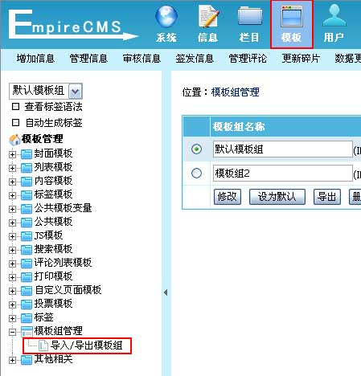
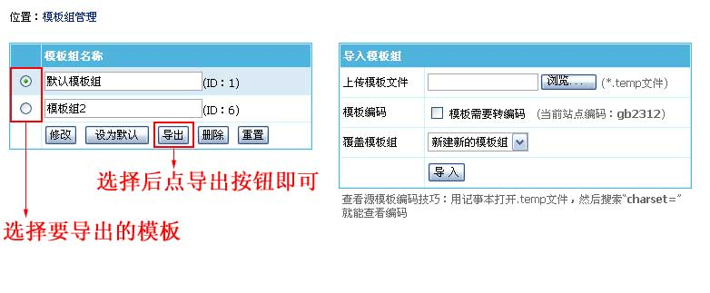
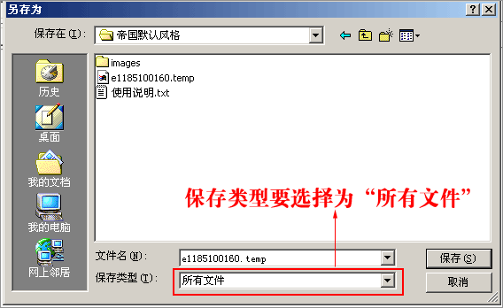
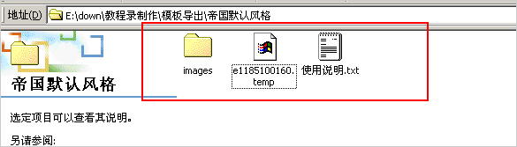
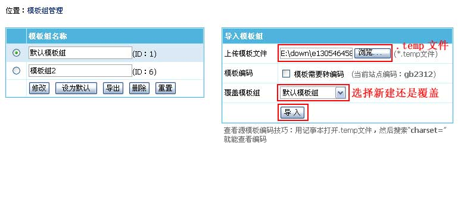
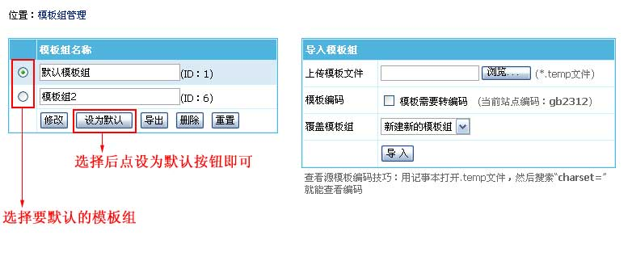

| 导出模板组：方便大家分享自己的模板。 导入模板组：导入下载的模板。 |
|
||
| 一、导出模板组： | |
| (一)、导出模板文件(*.temp)： | |
| 1、登录后台，单击“模板”菜单，选择“导入/导出模板组”子菜单，进入模板组管理界面： | |
|  | |
| 2、进入模板组管理界面，选择要导出的模板，然后点击导出按钮即可。如下图： | |
|  | |
| 3、保存导出的模板文件，（保存类型要选择为所有文件）。如下图： | |
|  | |
| 4、选择保存的位置，并且保存文件即可完成模板文件导出。 | |
| (二)、模板使用说明参考： | |
|
|
| (三)、将模板文件、模板图片/CSS/JS存放到一起，然后打包。如下图： | |
|  |
| 二、导入模板组： | ||||||
| (一)、导入模板文件(*.temp)： | ||||||
| 1、登录后台，单击“模板”菜单，选择“导入/导出模板组”子菜单，进入模板组管理界面： | ||||||
| 2、进入模板组管理界面，选择要导入的模板.temp文件，然后点击导入按钮即可。如下图： | ||||||
|  | ||||||
|
||||||
| (二)、将导入的模板组为默认模板组： | ||||||
|  | ||||||
| (三)、检查栏目选择的模板是否正确： | ||||||
| 1、由于新导入的模板组的模板ID不一定和原来栏目选择模板对应，所以要修改栏目重新选择新的模板，以让栏目与模板对应好。 后台>“栏目”>“管理栏目”：修改栏目的模板选项，重新选择使用模板。 2、模板中的标签指定调用的栏目ID一定和你网站栏目ID不一致，修改模板把标签参数中的栏目ID改为自己增加的栏目ID。 |
||||||
| (四)、检查栏目所选模板没有问题就可以重新生成页面。 | ||||||
| 后台>“系统设置”>“数据更新中心”： 刷新首页、刷新所有信息栏目页、刷新所有信息内容页面(选择全部刷新)、刷新所有信息JS调用、批量更新动态页面、批量更新反馈表单 |
| 相关链接： |
| 1、【模板导出】说明 |
| 2、模板导入视频教程 |